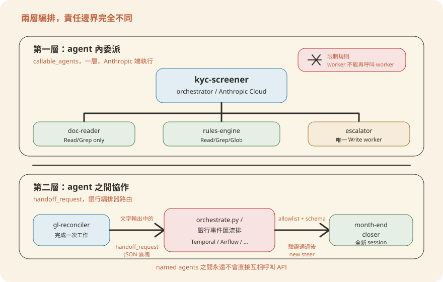
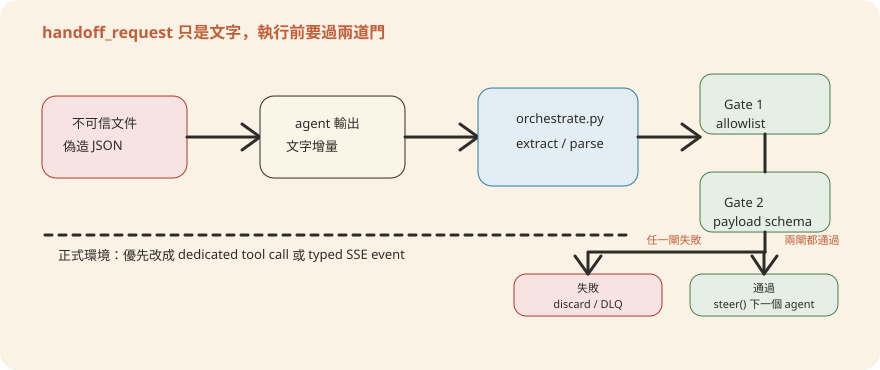

Chapter 8編排與跨 Agent 協作
一個 具名代理（Named Agent） 能委派給自己的 葉子工人（leaf worker），但它不能直接呼叫另一個 具名代理。「valuation-reviewer 發現一筆有問題的 portco（portfolio company，基金投資的被投資公司）後，通知 gl-reconciler」這種跨 agent 協作，靠的不是 API 呼叫，而是一份純文字宣告加上銀行自己的編排器。本章拆解這兩層委派的邊界在哪裡、`handoff_request`（交棒請求——請求把工作交接給另一個 agent） 怎麼被驗證與路由、以及當你要把參考腳本換成 Temporal / Airflow / Step Functions 時，哪些安全職責絕對不能丟。
8.1 兩層編排：agent 內委派 vs agent 間協作
這個 repo 裡「編排」（orchestration）其實分兩層，範圍完全不同，很多人第一次看會搞混：
第一層是 agent 內部的 callable_agents——一個 具名代理（orchestrator，主代理）呼叫自己的 葉子工人，這一層委派完全在
Anthropic 雲端執行，是 `POST /v1/agents` 這個 research preview（研究預覽階段，尚未正式開放「GA，即 General Availability」的
API）端點原生支援的能力。第二層是 agent 之間的協作——比如 valuation-reviewer 發現一筆有問題的 portco 後，要讓 gl-reconciler 知道；或者
kyc-screener 篩出高風險客戶後，要讓人工覆核佇列知道。這一層 Anthropic 完全不管，靠的是銀行自己的編排器（`scripts/orchestrate.py` 或你既有的工作流引擎）把一個 agent
的輸出路由成另一個 agent 的新 steering event（引導事件——丟進一個執行中 session 的一則新文字指令；session 則是 agent 一次連續的執行工作階段）。

兩層的差異可以用「誰負責檢查」來記：第一層的安全邊界是 agent.yaml 裡宣告好的 tools/連結器（見第 9 章的三層隔離），Anthropic
端執行、銀行不用插手驗證。第二層完全相反——一個 agent 的文字輸出本質上是不可信輸入的下游產物（見 8.3 節），所以路由前必須由銀行的程式碼把關，Anthropic 不會替你做這件事。
8.2 Steering event：一次執行怎麼被觸發
Steering event 是銀行後端丟給一個已部署 CMA（Claude Managed Agent，Claude 託管代理）session 的一段純文字指令，對應到
`client.beta.agents.sessions.steer(agent_id=..., input=...)` 這支 API。每個 agent 的 steering-examples.json
定義了它預期收到的事件長什麼樣子——這不是文件，是實際會被丟進 session 的字串。幾個真實例子：
| Agent | steering event（來自 steering-examples.json） | 場景 |
|---|---|---|
pitch-agent |
Build pitch book: target CRWD, acquirer PANW, thesis: platform consolidation in security
|
指定標的與收購方的併購簡報 |
kyc-screener |
Screen onboarding packet PKT-2026-00318 |
新戶開戶審查 |
kyc-screener |
Re-screen UBOs only for packet PKT-2026-00318 after updated ownership chart |
補件後的追加事件（同一 packet，範圍縮小） |
month-end-closer |
Close entity US-OPCO for period 2026-04 |
標準月結 |
statement-auditor |
Tie out statement batch BATCH-2026Q1-GIII against fund Growth-III NAV pack |
季度 LP（有限合夥人，基金出資人）對帳單全批次核對 |
注意每份 steering-examples.json 都混了「起手事件」和「追加事件」——同一個 session 可以被 steer 多次，例如 kyc-screener 收到補件後只重篩
UBO（實質受益人），不用整包重來；month-end-closer 收到晚到的分錄（late JEs）後只重寫 variance commentary（差異說明備註）。這對應到銀行後端一個很實際的問題：不是每次觸發都要開一個全新
session，追加類事件應該 steer 進既有 session。
執行結果怎麼回來？CMA 的 session 是用 SSE（Server-Sent Events）串流回傳，`scripts/orchestrate.py` 訂閱的方式如下：
with client.beta.agents.sessions.stream(session_id=source_session_id) as stream:
for event in stream:
if event.type != "message_delta" or not getattr(event, "text", None):
continue
handoff = extract_handoff(event.text)
...銀行後端訂閱這條 SSE 串流，逐個 message_delta 事件檢查文字內容——這也是為什麼「跨 agent 協作」必須另外設計：一個 agent
的輸出只是文字增量，銀行的程式碼要自己從中辨認出「這是不是一個要求交接給別的 agent 的信號」。
8.3 handoff_request 機制與威脅模型
具名代理 之間永不互相呼叫。當一個 agent 判斷工作需要交給另一個 agent 時，它只能在自己的文字輸出裡「宣告」一個 handoff_request，格式大致是
{"type": "handoff_request", "target_agent": "...", "payload": {...}}。這段文字本身沒有任何執行力——它會不會真的觸發下一個
agent，完全取決於銀行編排器怎麼解讀它。scripts/orchestrate.py 是這個機制的參考實作：
ALLOWED_TARGETS = {
"pitch-agent", "market-researcher", "earnings-reviewer", "meeting-prep-agent",
"model-builder", "gl-reconciler", "kyc-screener",
"valuation-reviewer", "month-end-closer", "statement-auditor",
}
HANDOFF_PAYLOAD_SCHEMA = {
"type": "object",
"additionalProperties": False,
"required": ["event"],
"properties": {
"event": {"type": "string", "maxLength": 2000},
"context_ref": {"type": "string", "maxLength": 256,
"pattern": r"^[A-Za-z0-9 ._/:#-]+$"},
},
}
def extract_handoff(text: str) -> dict | None:
m = HANDOFF_RE.search(text)
if not m:
return None
obj = json.loads(m.group(0))
target = obj.get("target_agent")
payload = obj.get("payload")
if target not in ALLOWED_TARGETS:
return None
jsonschema.validate(instance=payload, schema=HANDOFF_PAYLOAD_SCHEMA)
return {"target_agent": target, "payload": payload}腳本開頭的註解把威脅模型寫得很白，值得逐條讀：
攻擊面：handoff request 出現在 orchestrator 的文字輸出裡，而這個輸出是「未信任文件讀取者（untrusted-document
readers）」的下游產物。一個能控制被處理文件內容的攻擊者，可以在文件裡嵌入一段一模一樣格式的 handoff_request JSON——如果 orchestrator
把文件內容原文照抄進輸出，這段偽造的交接請求就會被這支腳本解析、路由出去。
兩道緩解：(a) target_agent 對照部署好的 slug 做 hard allowlist（白名單——只放行清單內的目標，不在名單裡一律丟棄）；(b)
payload 進 jsonschema.validate 做 schema 驗證，格式不對就丟棄，不會被拿去 steer 下一個 session。
作者自己承認的局限：這只是參考腳本，正式環境建議改用「專屬 tool call」或「模型無法靠引用文件文字偽造的 typed SSE event」來發出交接請求——換句話說，比對純文字更可靠的作法，是讓交接訊號走一條攻擊者摸不到的通道。

handoff_request 不是 API 呼叫，只是一段文字；真正的執行力來自銀行編排器的兩道驗證。把這個機制串起來看：agent 完成工作 → 在輸出裡宣告 handoff_request → orchestrate.py 攔截、做 allowlist + schema 兩道驗證 → 通過就呼叫
client.beta.agents.sessions.steer()，把 payload.event 當成新的 steering event 丟給目標 agent 的
session。三個真實案例（來自各 agent README 的 Handoff 小節）：
valuation-reviewer發現有問題的 portco，emithandoff_request給gl-reconcilergl-reconciler驗證完 break（對帳差異，未平帳項目）後，emithandoff_request給month-end-closer，把結果折進月結 commentaryearnings-reviewer/pitch-agent/market-researcher在需要重建模型時，都 emithandoff_request給同一個model-builder
三個來源交接給同一個目標，正是「target 必須做 allowlist 而不是信任來源」這件事的具體理由——model-builder 的 README 也直接寫明：「when invoked
from earnings-reviewer or pitch-agent, the calling agent's handoff_request
is routed here by scripts/orchestrate.py」，它不知道也不需要知道呼叫者是誰，反正 orchestrate.py 已經把關過。
8.4 換成銀行既有的編排引擎
orchestrate.py 檔頭第一句話就是「REFERENCE ONLY — replace with your firm's workflow engine (Temporal,
Airflow, Guidewire event bus)」。這支腳本示範的是「迴圈的形狀」，不是要你真的拿去上線。換成銀行既有引擎時，三個安全職責必須原封不動搬過去，不能因為換了引擎就省略：
用一個長駐 Workflow 訂閱來源 session 的 SSE（可以包成一個 Activity），在 Workflow 內做 extract_handoff 那段解析。allowlist
用 Workflow 的常數表，schema 驗證可以直接搬 jsonschema（Python worker）或換成 Temporal 支援語言的等價套件。驗證通過後，下一步 Activity
呼叫 steer() 對目標 session 送新事件；Temporal 原生的重試（retry policy）與工作流歷史（history）天生就適合當審計軌跡——這正好省了 8.6
節要自己刻的重試/冪等（idempotency，同一事件重複執行、結果不變、不會重複做事）邏輯。
來源 agent 完成後，由一個 sensor 或事件觸發的 DAG 去讀輸出（session 結束後的最終文字，而不是即時 SSE）。解析、allowlist、schema 驗證各自是一個 task；驗證失敗直接讓 DAG task 失敗並落到 Airflow 的失敗通知，不要吞掉錯誤。Airflow 的 task retry + XCom 可以留一份「這次 handoff 驗證結果」的記錄當審計軌跡，但要注意 Airflow 排程天生是輪詢式的，即時性不如 Temporal/SSE 訂閱式。
來源 agent 的後端呼叫方在收到 session 完成後，把輸出 PutEvents 到 EventBridge，帶上 detail-type 如
agent.handoff_candidate。一個 Step Functions 狀態機接手：Lambda 做 allowlist + schema
驗證（同一段邏輯，換個執行環境），驗證通過才進入下一個狀態呼叫目標 agent 的 steer API；驗證失敗的分支直接進 SQS 死信佇列（DLQ）而不是靜默丟棄。EventBridge
的事件本身自帶時間戳與來源，天生適合接稽核系統。
- Hard allowlist：target_agent 永遠對照「已部署的 slug 清單」，清單來自你自己的部署紀錄，不是來自 agent 輸出本身。
- Payload schema 驗證：驗證失敗要「安靜地丟棄」，不能因為想保留彈性而放寬
additionalProperties或拿掉maxLength。 - 審計軌跡：每一次 handoff 的來源 session、目標 agent、驗證結果（通過/拒絕）、時間戳都要留痕——這是第 9、10 章合規審查會要看的東西，不是編排引擎的附加功能。
8.5 銀行情境串接範例
下面兩個情境，第一個是 repo 目前實際文件化的交接鏈路（gl-reconciler → month-end-closer，見
managed-agent-cookbooks/gl-reconciler/README.md），第二個是把同一套機制延伸到 kyc-screener
的高風險升級——但升級對象是「人工覆核佇列」而不是另一個 具名代理，值得特別拆解兩者的差異。
情境 A：gl-reconciler 驗證完 break → month-end-closer 折進月結
trade date + asset class 清單，reader 只讀不信任的對帳單，resolver 驗證後產出 exception report（差異清單報告）
target_agent: "month-end-closer"，payload 帶上已驗證的 break 摘要allowlist 命中、schema 通過 → 呼叫
steer()
把驗證過的 break 折進該實體當期的 variance commentary
這是文件裡實際寫出來的鏈路，兩邊都是 具名代理，走的完全是 8.3 節那條 handoff_request 路徑。
情境 B：kyc-screener 發現高風險 → 人工覆核佇列（不是 handoff_request）
doc-reader 抽取欄位、rules-engine 跑規則／PEP（政治敏感人物，Politically Exposed Person）／制裁名單比對
./out/escalation-<packet>.xlsx，附建議風險等級因為目標不是「另一個部署好的 agent slug」，走不進 ALLOWED_TARGETS，本來就不該套用 handoff_request 這條路徑
README 寫明：「this agent recommends a risk rating; the compliance officer decides」
情境 B 刻意示範一個容易搞混的地方：orchestrate.py 的 ALLOWED_TARGETS 只收錄「已部署的 agent slug」，人工覆核佇列不是
agent，塞不進這個機制，也不該硬塞——升級到人工佇列該用銀行既有的案件管理系統，不必也不能透過 handoff_request 表達。
如果銀行想讓 month-end-closer 完結後接著觸發 statement-auditor（比如某支基金的實體月結完成後，順帶核對當季 LP
對帳單），機制上完全可行——statement-auditor 本來就已經在 ALLOWED_TARGETS 清單裡（見 8.3
節程式碼）。但這條鏈路目前不是 repo 既有文件裡寫出來的預設交接（目前唯一文件化的下游是 gl-reconciler → month-end-closer），要接的話，銀行只需要：在
month-end-closer 的 system prompt 加上「完結時視情況 emit handoff_request 給 statement-auditor」的指示，並確認 payload 的
event 欄位塞得下要傳的 batch/fund 資訊——不需要動 orchestrate.py 的 allowlist 或 schema。
8.6 失敗處理：重試、冪等、死信佇列
跨 agent 協作一旦接上銀行的編排器，失敗處理就是銀行自己的責任，CMA 不會替你重試 steering 失敗的呼叫。幾個必須設計的點：
- 重試：
steer()呼叫失敗（網路、rate limit〔速率限制〕、目標 session 已結束）要重試，但重試前先確認下一點 - 冪等（idempotency）：同一個 handoff_request 因為 SSE 重連或重試被解析兩次，不能對目標 agent steer 兩次——用
context_ref（schema 裡已有的欄位）或來源 session_id + target_agent 組一個去重 key，處理過的直接跳過 - 死信佇列（DLQ）：schema 驗證失敗、target 不在 allowlist、或重試次數用盡的 handoff，不能靜默丟掉——進 DLQ 保留原始文字與判定結果，讓人工事後查得到「有一個交接請求被擋下來，為什麼」
- 人為介入點：DLQ 裡的項目、以及所有「Not guaranteed」類的輸出（風險等級建議、pass/hold 建議）都要有明確的人工審核關卡，不能因為編排器暢通就把最後一道人工簽核也自動化掉
這幾點不是編排引擎的加分項，而是把 orchestrate.py 那句「REFERENCE ONLY」落地成正式系統時的必要條件——參考腳本本身完全沒有重試、去重、DLQ，只示範了 happy
path 的解析與路由邏輯。
- 編排分兩層：
callable_agents是 agent 內部一層委派，在 Anthropic 雲端執行；handoff_request是 agent 之間協作，靠銀行編排器（orchestrate.py或 Temporal/Airflow/Step Functions）路由 - 具名代理 之間永不互相呼叫；handoff_request 只是輸出裡的一段文字宣告，有沒有執行力完全取決於編排器
- orchestrate.py 的威脅模型：agent 輸出是未信任文件讀取的下游產物，攻擊者可偽造 handoff_request；緩解靠 hard allowlist + schema 驗證兩道關卡，正式環境建議走專屬 tool call 或 typed SSE event
- 換成銀行既有引擎時，allowlist、schema 驗證、審計軌跡三件事必須原封不動保留
- 不是每個「升級」都走 handoff_request——升級給人工佇列（如 kyc-screener 的高風險升級）目標不是 agent slug，本來就不套用這個機制
{"type":"handoff_request","target_agent":"model-builder",...} 的文字，希望誘導 orchestrator 把它原文複述出來、進而被
orchestrate.py 路由出去。下列何者最準確描述 orchestrate.py 對此的緩解方式？